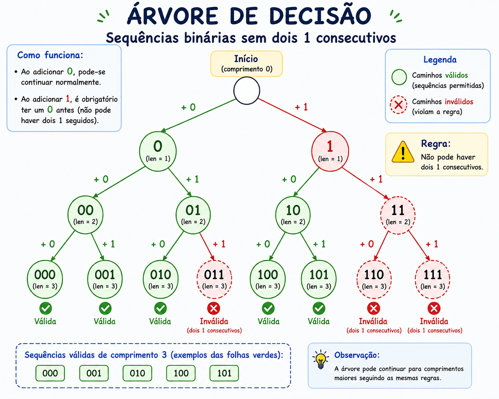
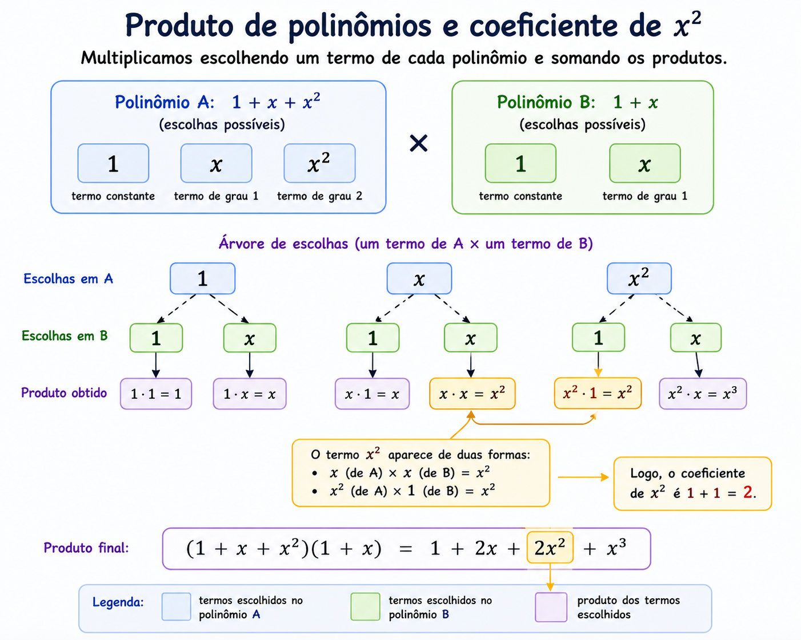
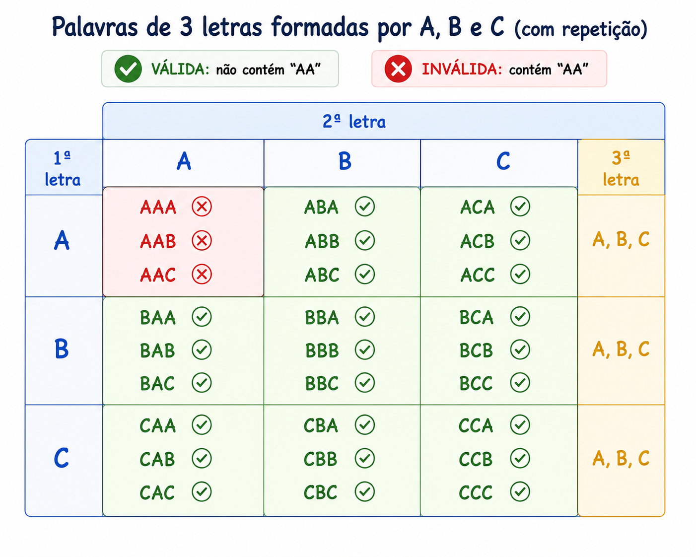

Esta página foi organizada para mostrar quando usar cada técnica, como pensar antes de aplicar fórmulas e como resolver exercícios.
Imagens geradas no chatGPT.
Antes de fazer contas, faça estas perguntas:
Se houver sobreposição, pense em inclusão-exclusão.
Se o problema depender de etapas anteriores, pense em recorrência.
Se houver muitas decomposições possíveis, pense em função geradora.
Essa técnica é usada quando somar quantidades separadamente faz com que alguns elementos sejam contados mais de uma vez. Em vez de evitar a sobreposição, nós a aceitamos e depois corrigimos o excesso de contagem.
Para dois conjuntos, usamos: |A ∪ B| = |A| + |B| - |A ∩ B|.
Em uma turma, 23 estudantes gostam de Java e 17 gostam de Python, sendo que dentre eles, 5 gostam das duas linguagens. Quantos gostam de Java ou Python?
Raciocínio: se apenas somarmos 23 + 17, os 5 estudantes que gostam das duas foram contados duas vezes.
Cálculo: |J ∪ P| = 23 + 17 - 5 = 35.
Em uma turma, 20 estudantes praticam futebol, 15 praticam vôlei, denter eles, 6 praticam os dois esportes. Quantos praticam pelo menos um dos dois? Exiba o cálculo e a representação.
Aplicando inclusão-exclusão:
|F ∪ V| = 20 + 15 - 6 = 29.
Logo, 29 estudantes praticam pelo menos um dos dois esportes.
Uma relação de recorrência é uma forma de descrever uma sequência dizendo como cada termo depende de um ou mais termos anteriores. Ela sempre vem acompanhada de condições iniciais, que são os primeiros valores da sequência.
Em vez de encontrar uma fórmula pronta, pensamos: “se eu já conheço as soluções para tamanhos menores, como construir a solução para o tamanho n?”
a_n (por exemplo, número de sequências binárias válidas de tamanho n).n pode ser construído a partir de objetos menores.a_n em função de termos anteriores (por exemplo, a_{n-1}, a_{n-2}).a_1, a_2) para completar a definição da sequência.Problema: quantas sequências binárias de tamanho n não possuem dois 1 consecutivos?
Definimos a_n como o número de sequências de 0 e 1, de tamanho n, sem dois 1 seguidos.
Agora, analisamos como pode terminar uma sequência válida de tamanho n:
n-1 símbolos anteriores formam qualquer sequência válida de tamanho n-1. Isso dá a_{n-1} possibilidades.n-2 símbolos formam qualquer sequência válida de tamanho n-2. Isso dá a_{n-2} possibilidades.Somando os casos, obtemos a recorrência:
a_n = a_{n-1} + a_{n-2}, para n ≥ 3.
Para completar, calculamos as condições iniciais manualmente:
a_1 = 2 (sequências: 0, 1).a_2 = 3 (sequências: 00, 01, 10).
n são construídas a partir de sequências de tamanhos n-1 e n-2 sem dois 1 consecutivos.Dica: sempre tente responder: “se eu já soubesse a resposta para tamanhos menores, como isso ajuda a resolver o caso de tamanho n?” Essa pergunta quase sempre leva à recorrência correta.
Explique por que a contagem de maneiras de subir uma escada de n degraus, dando passos de 1 ou 2 degraus, pode ser descrita por uma recorrência.
Seja a_n o número de maneiras diferentes de subir uma escada de n degraus, dando passos de 1 ou 2 degraus.
Para chegar exatamente ao degrau n, o último passo só pode ser de dois tipos:
n-1;n-2.
− Se o último passo foi de 1 degrau, então antes dele há uma maneira qualquer de chegar ao degrau n-1.
Existem a_{n-1} maneiras de fazer isso.
− Se o último passo foi de 2 degraus, então antes dele há uma maneira qualquer de chegar ao degrau n-2.
Existem a_{n-2} maneiras de fazer isso.
Os dois casos são disjuntos (ou o último passo é 1, ou é 2), então somamos as quantidades:
a_n = a_{n-1} + a_{n-2}, para n ≥ 3.
Agora calculamos manualmente os primeiros termos:
n = 1: a escada tem 1 degrau.
Só existe uma maneira: dar um único passo de 1 degrau.
Logo, a_1 = 1.
n = 2: a escada tem 2 degraus.
As possibilidades são:
(1,1) (dois passos de 1) ou (2) (um passo de 2).
Logo, a_2 = 2.
Com isso, obtemos a relação de recorrência completa:
a_n = a_{n-1} + a_{n-2}, para n ≥ 3, com a_1 = 1 e a_2 = 2.
Esses valores permitem calcular a_3, a_4, a_5, etc., de forma recursiva.
Funções geradoras transformam uma sequência em uma expressão algébrica que “guarda” todos os termos ao mesmo tempo. Cada coeficiente de x^n representa o termo a_n da sequência.
Se uma sequência é a_0, a_1, a_2, ..., sua função geradora ordinária é:
G(x) = a_0 + a_1x + a_2x² + a_3x³ + ...Ao multiplicar funções geradoras, estamos combinando escolhas. O coeficiente de cada potência de x no produto indica quantas maneiras diferentes produzem aquele “total”.
Considere o produto:
(1 + x + x²)(1 + x)O primeiro fator diz que podemos escolher 0, 1 ou 2 unidades de um certo objeto; o segundo diz que podemos escolher 0 ou 1 unidade de outro objeto.
O coeficiente de x² na expansão mostra quantas combinações diferentes de escolhas resultam em total 2 unidades.

x após o produto.O mais importante é entender a interpretação da função geradora, e não só sair expandindo expressões. Avalie toda vez: “o que cada coeficiente está contando?”
Muitos problemas não pedem apenas “quantos existem”, mas “quantos existem obedecendo certas condições”. As restrições geralmente impedem o uso direto de uma fórmula única.
Quantas palavras de 3 letras podem ser formadas com A, B e C, com repetição permitida, mas sem usar duas letras A consecutivas?
Primeiro, há 3³ = 27 palavras de 3 letras com A, B e C, sem restrição.
Depois, identificamos as palavras proibidas (aquelas que têm “AA” em posições consecutivas) e as excluímos da contagem. Outra abordagem é montar os casos válidos organizando as posições que podem (ou não) receber A.

Assista ao vídeo gerado pelo NotebookLM a partir do link desta página, para reforçar os conceitos discutidos em aula.
Há sobreposição de casos?
→ Use inclusão-exclusão.
O problema depende de resultados anteriores?
→ Monte uma recorrência.
O problema envolve distribuir, decompor ou extrair coeficientes?
→ Pense em função geradora.
Há restrições que impedem aplicar fórmula direta?
→ Use complemento, casos ou recorrência.Criar e resolver problemas que usem as técnicas estudadas nesta página.
Objetivo: pensar em situações reais e fictícias em que cada técnica de contagem pode ser aplicada, explicando claramente o raciocínio usado.
Em duplas, para entregar em uma folha de papel, consideremcada técnica estudada e: